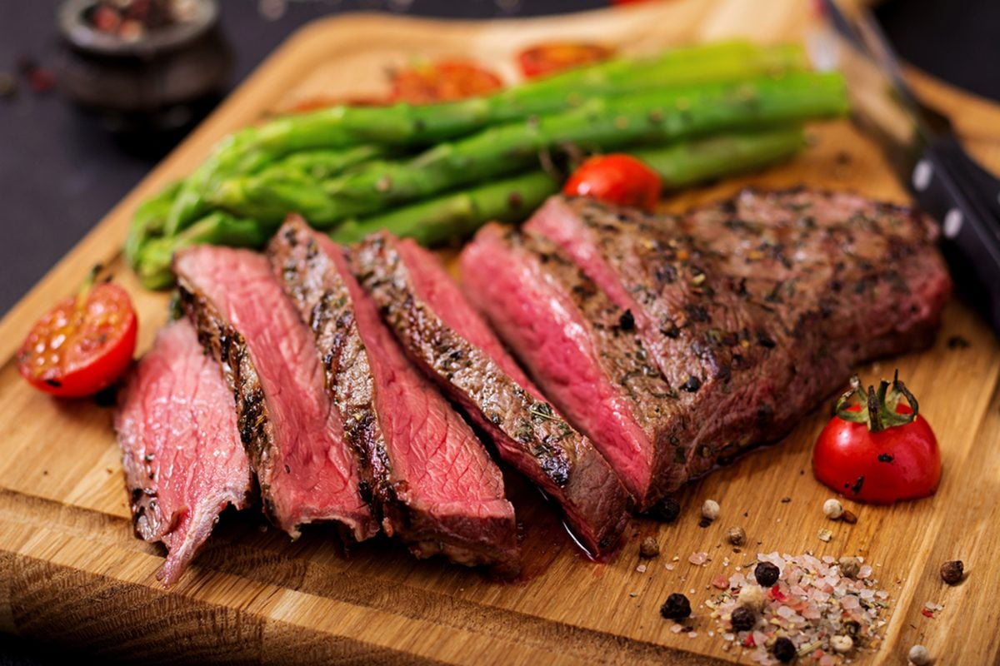

Medium Rare Steak

This recipe is how to properly cook a steak. Steak is best served medium rare
this is not an opinion but merely facts.
You can use a grill (prefered) or use a cast iron pan, if you intend on using a pan
consider reverse searing. Reverse searing is exactly what it sounds like. Typically
many people would sear a streak on all of it's surfaces and finish the steak by baking it,
I tend to find a better end result by baking it to medium rare and finishing it on a pan.
Ingredients
- Cut of steak, New York Strip, T-bone Steak, Ribeye, these are all fine
- 3 tbs butter
- 1 tbs garlic
- salt
- pepper
- thyme (additional, not needed)
Step by Step
- Start by grabbing your steak and seasoning it with salt and pepper on all surfaces
- Grab some aluminum foil and place your steak on top
- Add 2 tbs of butter and the seasoned steak wrapped around in aluminum foil
- Now you want to preheat your oven to 340
- place you wrapped steak in the oven for 30min
- After 30min take your steak out (it will still look pink all around)
- Dry off your steak by patting it down with a towel, you want your surface to be dry inorder to create a crust
- Heat up your cast iron skillet and place your steak in it
- You're looking to create a nice crust around the steak, the inside is already cooked from the oven
- once you've created a crust all around your steak add your garlic, thym & butter and lower the heat
- Base your steak with the butter for 2-3 min
- After you've seared the steak all around take the steak out and let it cool on a cooling rack
- IMPORTANT you must allow your steak to rest on a cooling rack for 5-10min
Other recipes